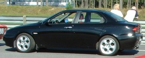
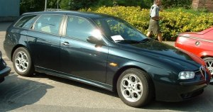
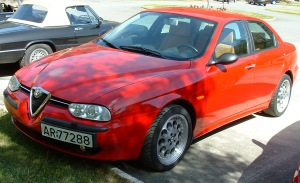

| We have been in touch with large garages saying you should not lower your car! They say this even though they have never tried it. In other words a total lack of interest and respect for the customer. |  |
 |
The sports pack for Sportwagon is just cosmetic, no lowering and no sports dampers. A tragedy! The car on this picture is lowered, though. |
| The 156 is a very good standard car, but we have in this article revealed that there are great rooms for improvement. The modifications shows what the potential of the Alfa 156 really is. Strongly recommended! |  |
Thanks to Øyvind I for letting me use his text!